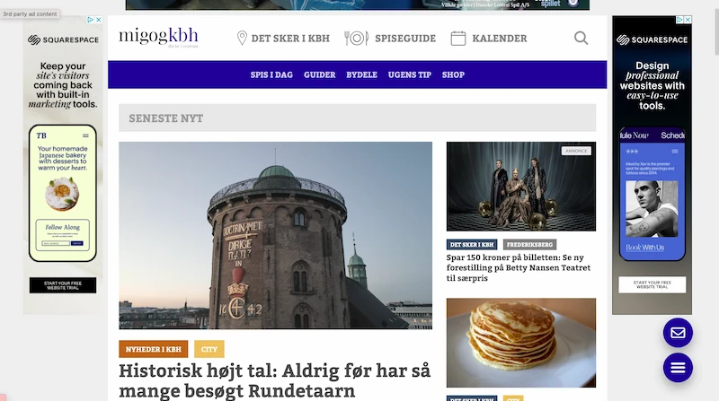

Tema - 3
Grundlæggende UX/UI
Om tema 3
I dette emne har vi fået indsigt i samspillet mellem UX (brugeroplevelsesdesign) og UI (brugergrænsefladedesign). Derudover har vi også fået indsigt i hvilke værktøjer, metoder og teorier man kan bruge til design, research og test i en digital produktudvikling. Her fik vi en forståelse for hvorfor dette samspil er vigtigt i designvalget, i stedet for bare at gå med mavefornemmelser.
Vi skulle selv finde på et hjemmeside vi ville lave og om hvad. Vi havde frie tøjler til hvad den skulle handle om og hvordan den skulle se ud. Vi lærte om research metoder såsom desk research og observationsresearch, samt forskellige tests såsom 5 sekunds test og tænkehøjt test.
Færdigheder
- At benytte sig af forskellige research metoder(Desk research og observationsresearch)
- At få inspiration og ideudvikle ved hjælp af moodboard, storyboard, Crazy 8's, solution sketch, sitemap og layoutdiagram.
- At udvikle wireframes og prototyper
- At lave forskellige tests (5 sekunders test og tænkehøjt tests, lighthouse test)
- At udvikle en forståelse for UX/UI konventioner
Afleveringer
- 03.01.01 - Research og idé
- 03.02.01 - Digital prototype
- 03.03.01 - Kodet site
- 03.04.01 - Præsentation
- 03.04.02 - Procesdokumentation
Process - 03.03.01 Kodet site
Research, moodboard, style tile og Storyboard
Jeg researchede andre kultur websites, som omhandlede det jeg ville lave om. Jeg valgte at lave en hjemmeside til studerende, og hvordan man stadig kan have et liv og hygge sig med sine venner, selvom pengepungen ikke rækker så langt.
Gennem desk research finder man information der allerede findes om emnet og inspiration til egen hjemmeside. Jeg researchede andre kultur websites, som omhandlede det jeg ville lave om. Derudover var jeg ude på studenterhuset for at lave en observationsresearch af andre studerende og deres vaner. Det er en kvalitativ research metode, hvor man observerer folks handlinger i et given sted der giver mening for emnet. Mit research gav mig et indblik i hvad mine hjemmeside skulle omhandle og hvordan den skulle se ud, hvilket ledte mig til mit moodboard. Her fandt jeg forskellige billeder der skulle afspejle min stemning til denne hjemmeside.
Derudover interviewede jeg min veninde, som var i målgruppen for mit site, hvor jeg fik længere og mere dybdegående svar.
Ud fra mit interview har jeg lavet et storyboard, med min persona Alma. Mit storyboard var med til at tydeliggøre og visuelisere min process fra start til slut om hvordan jeg gerne vil have at min målgruppe skal opfatte
Moodboard

Storyboard

Style Tile

Desk Research

Sketches og prototype
Vi begyndte at arbejde på hjemmesidens udseende og begyndte vores designprocess. Her startede vi med at lave the four step sketch, som startede med at vi i 20 minutter skulle skrive noter ned om hvilke indsigter vi har fået indtil videre. Nu skulle vi så i 20 minutter skrive ideer ned og hurtigt skitsere forskellige ideer og i de sidste tre minutter udvælge den bedste ide. Herefter lavede vi crazy 8's, hvor vi havde otte minutter til at skitsere otte forskellige versioner af den ide vi lige havde valgt. Til allersidste i denne opgave skulle vi bruge 30-90 minutter på lave en solution sketch, som så ville blive vores foreløbige valgte skitse.
Vores solution sketch skulle hænges op i klassen. Vi skulle derefter gå rundt og kigge på de andres sketches og udvælge nogle funktioner vi godt kunne lide, samt skrive kommentarer.
Efterfølgende lavede jeg min wireframe i figma, som var mit første udgangspunkt hjemmesidens visuelle udtryk. En wireframe er et visuelt skelet af hjemmesiden, som hjælper med at planlægge hjemmesidens grundlæggendel layout. Jeg begyndte herefter at udvikle UI genneen min prototype baseret på min wireframe. UI er den visuelle og interaktive del af designet, hvorimod UX beskæftigere sig med brugerens oplevelse af designet og det interaktive system som man finder ud af gennem forskellige test af designet. En prototype er en foreløbig version af sitet og hvordan jeg på daværende tidspunkt ville have hjemmesiden skulle se ud. Jeg puttede derfor billeder, indhold og tekst ind på prototypen. Den skulle jeg bruge til at teste hjemmesiden på forskellige måder.
Wireframe

Prototype

Solution sketch

Test og slutprocessen
Da vi var færdige med prototypen skulle vi begynde at sitet og dets funktionalitet og om den bliver forstået og modtaget samme måde som jeg gerne vil have den til. Vi lavede en tænkehøjt-test, som bestod af tre personer. Det bestod af den der havde lavet sitet, en test-person, som skulle tænkehøjt igennem processen i at teste sitet, og til sidst en observatør, som skrev noter ned om test-personens tanker. Det gav mig en indsigt i test-personens oplevelse af designet, altså UX.
Herefter begyndte jeg at kode udfra UX af mit site, for at få den bedst mulige løsning til denne hjemmesides funktion. Derfor lavede jeg den med den indsigt i primært UX, men også UI.
Som det sidste i dette projekt efter kodningen skulle vi præsentere vores website foran klassen ved hjælp af powerpoint.
Mit endelige resultat er endt en smule anderledes end den skulle have været, da der var nogle ting ikke kunne finde ud af, blandt andet at lave en åben burgermenu. Men det ved jeg nu, og fremover er jeg klar over mine egne færdigheder.